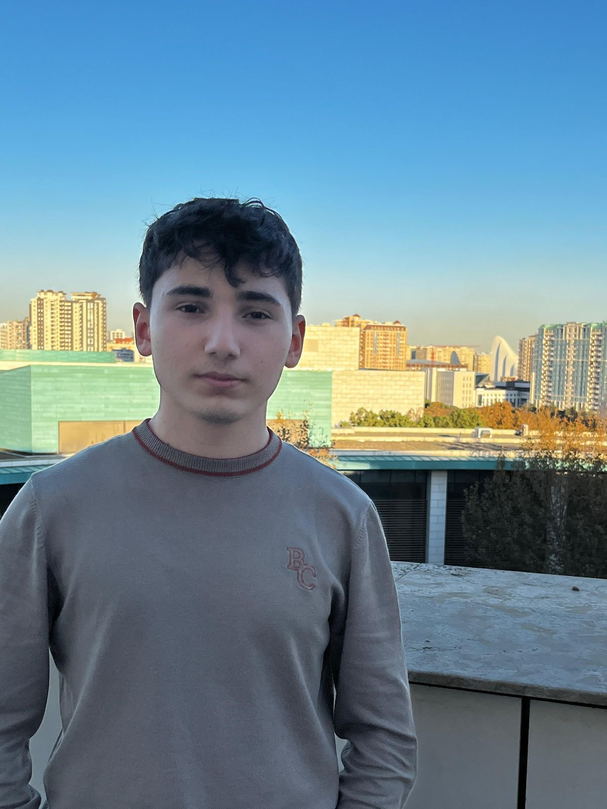
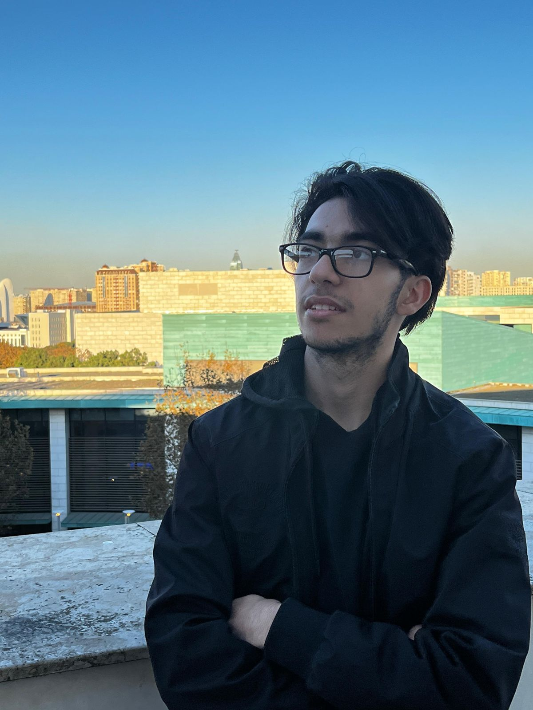
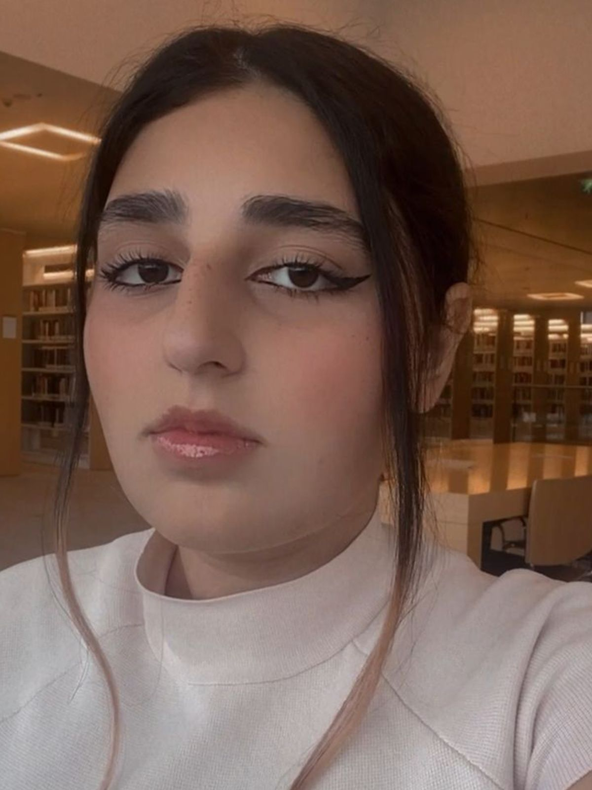

Shamil Kazimli
My name is Shamil. I am 17 and my major is IT. I am a determined person
who wants to fill out my CV with valuable projects and skills and have as many
as valuable friends I can during my journey at university. Honestly, I feel
very lucky to have such a major since I believe
I will obtain most of my goals.
In preparation for applying to universities,
I have undertaken numerous tests and exercises.
I have completed the SAT exam and achieved a
score of 1430. Additionally, I have taken IELTS
and TOEFL English language tests. Moreover,
I completed DIM and achieved a score of 606,
which was my main achievement for appliying
to this university.
In 2019, I had the opportunity to participate in the
Children Exchange Program SOCAR Uniper
2019, which was organized by SOCAR and UNIPER. Out of
hundreds of applicants, I was one of the 20 students selected
to participate in this program. Throughout the program, I had
the chance to visit various German cities, including Frankfurt,
Leverkusen, and Nuremberg etc. Additionally, I participated in
different projects and a 12-hour German language course. One of
the most memorable parts of the program was visiting tech companies,
such as BMW, where I witnessed the development and technology used
in that companies. This experience solidified my desire to pursue
this field further.

Araz Valishov
Hi, there. I am Araz. I'm excited to explore every opportunity
ADA university offers and enter the world of academia. I've decided
to pursue a degree in Computer Science. I can't wait to learn new things
about my field, have triggering conversations, and make new friends. Outside
of the classroom, I'm excited to join clubs related to my interests, whether
they be in sports, the arts, or volunteer work. My hobbies are chess and music.
Combining these hobbies with my academic pursuits will contribute to a balanced
and fulfilling university life. Additionally, one of my goals is to play chess
against Ismayil muellim. If he wants to play, here my
Chess.com account. If that
opportunity arises, it could be an incredible experience, allowing me to test my
skills against an experienced chess player (National Master) and potentially learn
valuable lessons from the game. That’s it. I will keep nurturing my passions, pursuing
my goals, and embracing every aspect of the academic journey at ADA University.

Laman Ahmadova
Hi there! As a first-year student in computer engineering,
I'm Laman, a 17-year-old starting this exciting path. Imagine
a world in which logical and creative lines of code can do
anything you wish. That's where I'm at. I have a strong desire
to understand the complexity of circuits and algorithms in
the field of technology. I'm fascinated by how hardware and
software interact to create the digital world because I'm an
enthusiast for computer engineering. I always have a great
desire to explore the exciting and always changing world of
technology, whether it is by designing a beautiful application
or playing around with the newest devices. In between the circuit
schematics and binary codes, you'll find my more tender side—a
deep affection for cats. I hold a particular place in my heart for
these mysterious animals, and I take comfort in their loving yet
independent demeanor. My favorite thing to do when I'm not lost
in the virtual world of programming is curling up with a book and
a purring kitty by my side. Apart from technology, I have a wide
range of interests. My constant companion is philosophy, which
gives me a prism through which to view the more profound concerns
of existence and the moral implications of scientific advances.
It's the ideal diversion from the logical accuracy of coding, a
field that emphasizes abstract concepts and critical thinking.